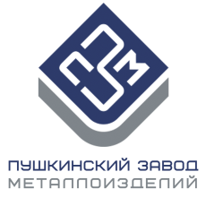

Типичная галерея работника ПЗМ 👌 #ПЗМ #Работа #Юмор

MITEX 2026 · Россия · Стенд 8C1001
Карточка проверена 10 ноября 2026, 09:25 · Источник ↗ · Снимок оригинальной карточки ↗
Пушкинский завод металлоизделий производит оцинкованный перфорированный и мебельный крепеж под торговой маркой "ПЗМ". На сегодняшний день, ассортиментный ряд нашей продукции насчитывает более 50 наименований различного размерного ряда, в нескольких вариантах толщин (1,5 мм, 1,7 мм, 2,0 мм). Наш завод является узнаваемым брендом на рынке перфорированного крепежа. Мы на протяжении многих лет сотрудничаем с крупнейшими метизными торговыми компаниями нашей страны, а также DIY сетями. Каждый год мы развиваем данное направление с упором на предоставление качественной продукции и дополнительных сервисных услуг, таких как: расширение ассортиментного ряда для удовлетворения 100% товарной матрицы, различных видов упаковки, штрихкодирования и доставки до склада покупателя.
Контакты 141270, Московская область, рп. Софрино, ул.Патриарха Пимена, дом 25А, к.1, комн 7 Телефон: +74954019575 E-mail: info@p-z-m.ru Адрес: 141270, Россия, Московская область, Пушкино, 141270, Московская обл, г Пушкино, рп Софрино, ул Патриарха Пимена, д 25А к 1, ком 7, 7 Веб-сайт: https://p-z-m.ru/ E-mail: info@p-z-m.ru Телефон: +74954019575
В доступной карточке нет видео или документов. Смотрите сайт участника.
До десяти последних сообщений каждого найденного канала. Оригинал открывается по ссылке.
Типичная галерея работника ПЗМ 👌 #ПЗМ #Работа #Юмор

🇷🇺 Поздравляем Вас с Днём народного единства! Этот праздник символизирует сплоченность и общую ответственность за будущее нашей страны! 🔥 Команда ПЗМ желает Вам стабильного роста…


🏭 От рулона стали до заготовки: что важно согласовать? 👉 Работа СМЦ начинается не с резки, а с понимания требований к конечной заготовке. Перед переработкой…

ПЗМ. Превращаем металл в готовые решения! 👍 #ПЗМ #Металлоизделия #Производство #Крепеж

🛠️ ПЗМ приглашает на MITEX 2026 - одну из главных выставок металлоизделий в России! 🔥 С 10 по 13 ноября встречаемся в Москве на крупнейшей…

ПЗМ. Симфония производства и обработки металлоизделий 🎶 🔥 Поставляем только качественную и надёжную продукцию для вас! 🌐 p-z-m.ru 📩 info@p-z-m.ru 📞 +74954019575 #ПЗМ #Металлоизделия #РулоннаяСталь…

MITEX-2026: ПЗМ на главной сцене инструментальной отрасли С 10 по 13 ноября 2026 года в Москве, в Международном выставочном центре «Крокус Экспо», пройдёт MITEX-2026 —…
ПЗМ выступит партнером конференции СМЦ в Казани 8–9 октября в Казани состоится 17-я Международная конференция «Сервисные металлоцентры России: оборудование, технологии, рынок» . В мероприятии примут…

Китайская оцинкованная сталь на российском рынке: почему важен осознанный выбор Российский рынок сталкивается с ростом поставок китайского металла. В данном случае речь идёт именно об…

Уважаемые клиенты, друзья! ⚙️ Поздравляем с Днём машиностроителя ⚙️ 🥂 Пусть ваши самые смелые проекты и механизмы работают без сбоев, а жизнь будет отлажена так…